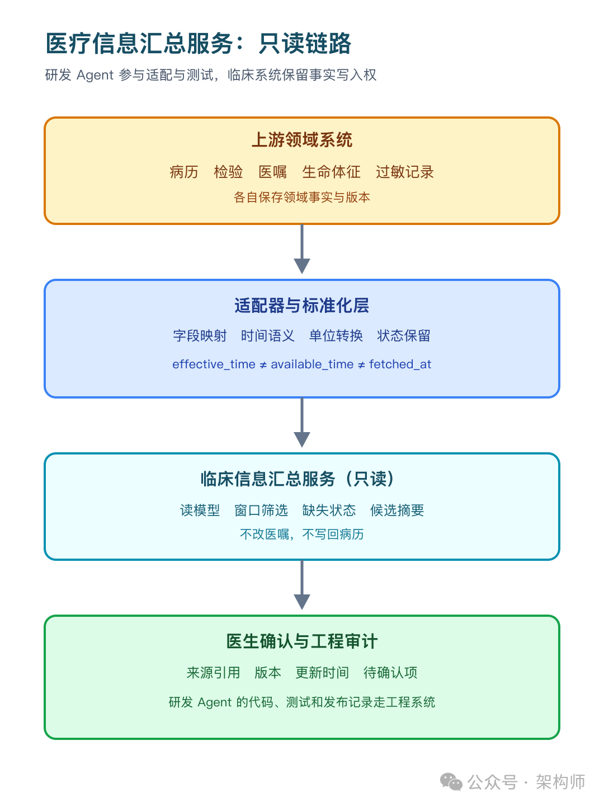
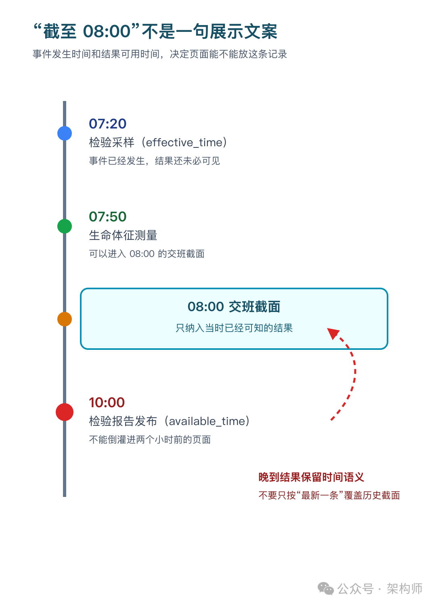
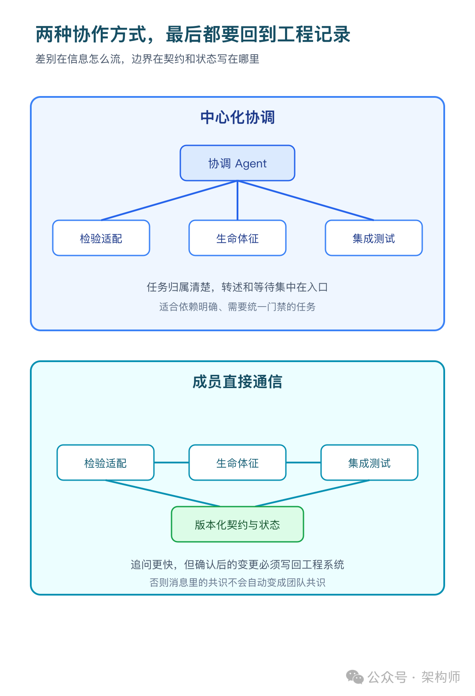

从 ReAct 到 Agent Team：医疗系统研发任务里的信息流与责任边界
来源：微信公众号 归档日期：2026-09-18 抓取状态：成功 原文字符：12050｜配图：4 张
摘要速览
- 以只读临床信息汇总服务为例讨论 Agent 协作的信息流与责任边界；核心判断标准：「是否值得增加一个 Agent，要看它有没有带来可核对的增量」。
- 反例：单测全绿但业务含义未对齐——10:00 才发布的报告不该出现在「截至 08:00 已知信息」中；医嘱有效≠已给药；「查询无记录」≠「患者无过敏」。
- 工程要点：先钉死接口契约再谈并行；字段需区分事件时间（effective_time）、结果可用时间（available_time）与拉取时间（fetched_at），保留 provenance 与 data_status。
- 责任边界：只读汇总服务不成为病历/医嘱的新写入入口；研发 Agent 使用脱敏合成数据与独立工作区；commit_sha、schema_version、测试报告须落在工程系统而非对话上下文。
- ReAct 先把单循环跑通，再判断哪些工作值得并行拆给 Agent Team。
核心内容
- 核心案例是「时间语义」陷阱：测试用例覆盖了字段却没覆盖业务时点，绿灯掩盖语义错误——评测必须测语义而非仅测接口。
- 三类信息各有时间戳：事件何时发生、结果何时可用、何时被拉取，混用会导致信息穿越。
- Agent Team 拆分前提：接口契约稳定 + 每个产出可核对；否则并行只是放大混乱。
可执行启发
- 给多 Agent 数据流的每个字段标注 effective_time / available_time / fetched_at，杜绝「未来信息」泄漏。
- 设计 Agent 任务前先问：它带来什么可核对的增量？答不出就不加这一环。
归属：[[02-输入/按主题/工具与技术/_index|工具与技术]]
我的想法
（待补充）
原文沉淀
目录
- “最近 24 小时”要先写成接口契约
- ReAct 先把一个循环跑通
- 先拆责任，再拆 Agent
- 一致性落在三件具体的事上
- 信息流决定协作方式
- 集成测试要检查业务含义
- 失败时，先分清发生了什么
- 并行收益要和代价放在一起算
- 先选能解释清楚的架构
- 参考资料
- 相关阅读：
架构师（JiaGouX）
我们都是架构师！ 架构未来，你来不来？
早交班前，医生要看一位住院患者昨晚的体温、血压，核对最新检验结果，再确认药有没有实际用上。检验报告在一个页面，护理记录在另一个页面，医嘱还要单独打开。做一个汇总页面，听起来就是几组接口加一段摘要；到了研发阶段，单是“最新”两个字，就有不少地方需要说清楚。
拿一个只读的临床信息汇总服务作例子：检验和生命体征查看最近 24 小时，用药分别呈现有效医嘱与执行记录，过敏信息保留既往有效记录，不套用这个 24 小时窗口。页面展示来源、时间和待确认项，首版不下诊断、不改医嘱，也不写回病历。
在这项研发里，Agent 可以读接口文档、梳理字段映射、写适配器、补测试，再由工程师检查代码和联调结果。这里讨论的 Agent Team 负责协助研发；上线后怎样生成摘要，是另一项需要单独验证的设计选择。
为早上 08:00 的交班页面设计一组集成测试输入：一条检验记录在 07:20 采样，10:00 才发布报告；一条生命体征在 07:50 测量；一条医嘱仍有效，但没有查到对应的给药记录。过敏接口则返回空列表。单独看，每个接口都能正常返回；组合起来，这个页面该显示什么？
检验适配器的单测如果只检查数值、单位和报告时间，可能完全通过；生命体征适配器也能正确解析测量时间。可把它们合进“截至 08:00 已知的信息”，10:00 才发布的报告就不该出现。医嘱有效，也不能直接写成“已给药”。至于过敏接口的空列表，只能说明这次查询没有返回记录，不能顺手变成“患者无过敏”。
单测全绿，业务含义却没对齐。测试报告倒是挺喜庆，联调还得继续。
这种错位，和《面试官：讲一讲多 Agent 协作如何保持一致性》讨论的是同一个问题：协作者处理的任务、依据的事实、推进的状态，能不能对得上。医疗研发又多了一层要求：字段名称相同，业务含义也未必相同。所以先把接口语义钉住，再谈哪些工作值得并行。
“最近 24 小时”要先写成接口契约
架构设计先看数据流和写入边界，再决定 Agent 放在哪里。这个服务的读链路并不复杂，关键是每一层都知道自己能改什么、不能改什么。

医疗信息汇总服务的只读链路
病历、检验和医嘱系统仍然保存各自的领域记录，汇总服务建立一个面向工作站的读模型。它可以缓存结果、保存来源引用，但不成为病历或医嘱的新写入入口。研发 Agent 的工作区、测试工具与这条运行链路分开，默认使用合成或经批准脱敏的测试数据，也不需要生产写权限。
HL7 FHIR R4 的定义能帮助检查这里的语义：Observation.effective[x] 表示观察在临床上对应的时间或时间段，issued 表示该版结果何时可用；MedicationRequest 描述开立的用药请求，MedicationAdministration 描述实际给药事件。适配医院已有接口时，可以借这些区分检查映射，但字段怎样对应仍要以当地接口和业务定义为准。
“最近 24 小时”筛选的是事件发生时间；“截至 08:00”约束的是结果在何时可知。若要复现历史页面，还需要保存当时的源记录版本或查询快照；只在请求里加一个 as_of，并不能让上游接口自动具备历史查询能力。

事件时间与结果可用时间
接口契约里至少要固定这些字段：
patient_id / encounter_id
window_start / cutoff_time / timezone
effective_time / available_time / fetched_at
source_system / source_record_id / source_version
data_status / provenance字段只是示意，重点是把事件时间、结果可用时间和本次拉取时间分开保存。provenance 留下来源引用；data_status 区分有数据、查询无记录、上游不可用等情况。空返回只能说明“这次没有查到记录”，不能顺手写成“患者无过敏”。上游不提供记录版本时，保存响应快照与拉取信息，也能为后续核对留下依据。
不同上游通常也没有跨系统的统一事务快照。某个来源晚到或不可用时，页面可以保留已获取的信息，同时标出更新时间与缺失项；是否允许展示这份不完整摘要，要在需求和验收条件里约定，不能留给模型临时猜。
在传统研发流程里，这几步对应需求澄清、领域建模、接口设计、适配器实现、契约测试、集成测试和发布门禁。Agent 可以参与每一环，但 commit_sha、schema_version、测试报告和发布记录仍然要落在工程系统里，不能只存在对话上下文中。
ReAct 先把一个循环跑通
ReAct（Reasoning and Acting）是一种把推理和行动交替进行的工作方式：根据目标判断下一步，调用工具，读取真实返回，再决定继续、修正还是停止。
目标与上下文
↓
判断下一步
↓
调用工具
↓
读取真实返回
↓
检查是否更接近目标
↓
继续 / 停止 / 交给人让一个研发 Agent 修正检验适配器，就能看到这个循环：先读字段映射与查询契约，运行前面那组测试样例，发现 10:00 发布的结果混进了 08:00 的页面，再检查过滤逻辑、修改代码、重新运行测试。工具返回具体的失败断言和原始输入，下一轮才有依据。
不过，测试通过只证明现有断言通过。如果测试本身漏了报告可用时间，Agent 也可能一路顺利地把错误实现交回来。ReAct 提供了利用反馈的循环，反馈是否充分，仍取决于测试和工具怎么设计。
研发环境的权限、允许修改的目录、网络访问和执行预算由运行时控制。Agent 可以在隔离分支修改适配器和测试，合并、迁移与发布仍走工程系统已有流程。提示词里的限制需要有工具权限配合。
进入多 Agent 后，每个执行者都有自己的上下文。一个循环的结果要经过消息、任务记录或外部制品，才能被下一个循环使用。信息一旦只停留在某个 Agent 的对话里，后续协作者拿到的就只剩“我查过了”。
先拆责任，再拆 Agent
契约定下来，拆分才有意义。检验和生命体征适配器可以基于同一版契约分别开发；接口契约尚未确定时，让实现和验收各猜一份定义，后面很容易返工。任务依赖要先于角色命名。
| 研发工作 | Agent 协助完成 | 交付物 |
|---|---|---|
| 身份与查询契约 | 对照主索引、就诊映射和时间定义，列出待确认问题 | 字段映射、契约草案、边界样例 |
| 检验与生命体征适配 | 实现字段转换，补单位、时间和报告修订测试 | 代码变更、契约测试报告 |
| 用药与过敏适配 | 区分医嘱与执行记录，保留缺失和确认状态 | 状态映射、异常路径测试 |
| 集成与复核 | 用同一批数据回放，检查页面事实与来源记录 | 集成报告、可复现阻塞项 |
每个产物都要能回到代码、输入和验收依据。接口定义有疑问时，Agent 提交问题及证据，交给工程师和业务人员确认；不能为了继续执行，自己把一个待确认项改成默认规则。
例如，检验适配器的交接报告可以带上字段映射、修改的提交、失败与通过的测试，以及尚未验证的上游行为。下游读摘要快速了解进度，需要核对时再打开原始报告。单独一句“检验模块已完成”，留给集成的人猜的事情太多。
Anthropic 在多 Agent Research 的工程总结里给了一个很实用的做法：子 Agent 把报告、数据或代码写入外部制品系统，再把路径、摘要和状态交回协调者。上下文不需要整段复制，后续的人也能回到原始证据。
一致性落在三件具体的事上
负责适配器的 Agent 和负责测试的 Agent，可以对实现提出不同意见。例如一方主张在适配层过滤晚到报告，另一方主张由汇总层统一过滤。讨论这类选择有价值，但至少要共同确认：
- 交付的是同一版需求，使用相同的患者与就诊映射规则；
- 实现和测试依据相同的接口契约、回放数据及时间条件；
- 子任务状态能回到工程记录，局部完成不等于整体验收通过。
交接时，我会保留下面这些工作状态，聊天记录只作为补充；具体字段随任务复杂度调整：
global_task_id / sub_task_id
base_commit / commit_sha
schema_version / fixture_version
input_snapshot / query_contract_ref
confirmed_facts / assumptions
capability / constraints
artifact_refs / acceptance
status / version / attempt
lease_until / result_reffixture_version 标识测试输入版本，commit_sha 标识代码提交；它们与契约版本一起保存。患者、就诊标识和查询时间放在对应的测试输入里。这样复核者才知道，报告验证的是哪份代码和哪组样例。
结果也需要有状态。候选、已验证、冲突、已否决至少要能区分；“测试命令执行成功”和“交付满足需求”不能共用一个字段。复核者发现 10:00 的报告进入 08:00 页面时，应提交可重放的失败样例，并退回时间过滤相关任务。
消息还会延迟、重复和乱序。第一次测试调用超时，重试先回报成功，第一次迟到的失败消息又把状态改回去。任务记录要带 attempt 和 version，通过带条件的状态更新拒绝过期结果，旧消息不能覆盖新状态。
传统 CI 已经很重视这件事：测试报告绑定提交，代码继续变化后，旧报告不能证明新代码可交付。Agent 协作沿用这条规则，才不会把一份过期的“通过”带到合并阶段。
信息流决定协作方式
到了协作层，差别主要落在信息怎么走。
一种是中心化汇总：协调 Agent 分派适配器、测试和来源核对任务，收回代码与报告，再安排集成。权限、预算和任务归属比较清楚；但成员发现接口问题时，要经过协调者转交，上下文可能在转述中丢失。
另一种是成员直接通信：适配器 Agent 可以向测试 Agent 追问样例，前后端 Agent 可以直接讨论接口。Claude Code 的 Agent Teams 文档提供了共享任务列表和成员间直接通信，也提示了额外成本。它让沟通更方便，但共享任务列表不等于业务数据库或发布记录。
Akihiro Nakamura 在网上比较当时的 Codex Multi-Agents 与 Claude Code Agent Teams，也把区别归到信息如何流动：由父 Agent 汇总，还是允许成员直接交流。这是他对当时产品机制的观察。对研发团队更有用的问题是，成员间的追问能否减少返工，讨论后的契约变更又保存在哪里。
例如，两个 Agent 商量好了一个新的空值规则，却只在消息里记了一笔，其他适配器和测试仍用旧定义，直接通信反而扩大了错位。讨论可以发生在成员之间，确认后的变更要进入版本化契约，并标出哪些任务、测试需要重跑。
检验与生命体征适配器可以在隔离分支并行；共享模型和 API 契约的改动，则适合由一个明确的入口合并。让两个 Agent 同时改同一个文件，省下的等待时间很可能会被冲突处理吃掉。
能不能并行，可以沿依赖图检查：输入是否独立，产物是否独立，合并是否可以延后。Agent 数量本身不能说明并行收益。

中心化协调与成员直接通信
集成测试要检查业务含义
沿用开头的样例，集成测试要检查的是最终页面是否遵守需求，不能只验证接口都返回了 200：
身份：patient_id、encounter_id 与授权范围一致
时间：10:00 才发布的报告不进入截至 08:00 已知的信息
用药：有效医嘱与实际给药记录分开显示
过敏：空返回不生成“无过敏”，既往有效记录不被 24 小时窗口过滤
证据：页面事实能回指原始记录及其版本
缺失：上游不可用、无记录、结果待发布分别表达
边界：不输出诊断，不改医嘱，不写回临床事实
审计：记录调用者、工具结果、版本和人工确认
判定：测试报告绑定代码、契约和样例版本，满足合并条件写实现的 Agent 可以自测，但不能只靠它的一句“通过”放行。CI 验证确定的断言，复核者回到原始输入检查遗漏，工程师确认有争议的业务规则。再加一个复核 Agent 也不能保证独立性：如果它照着实现逻辑生成预期结果，同一个误解就可能被确认两遍。
发现空返回被写成“无过敏”，复核报告需要指出具体输入、断言和代码位置，退回状态映射或摘要渲染任务，并补上回归测试。这样改完之后，同一个问题才有机会被下一次构建自动拦住。
报告修订、停用医嘱、跨就诊混入数据、单位缺失，也值得进入回归样例。每次修复都留下一个能重放的测试，比反复在提示词里写“请仔细检查”可靠得多。
失败时，先分清发生了什么
研发阶段的工具调用同样会超时。读取文档或查询测试结果通常可以重试；创建合并请求、执行迁移或触发发布超时，调用方却不能据此断定远端没有执行。即便这些动作由工程流程而非 Agent 直接发起，协调系统也需要识别它们的真实状态。
更稳的状态至少分成“未执行、执行中、已完成、失败、状态未知”。状态未知时先查询远端状态，只有确认可以安全重放，才重新发起动作。写操作使用幂等键，重复请求由数据库唯一约束或下游接口挡住第二次副作用。
失败也应落在子任务层。两个适配器已通过验收，只有过敏接口测试因环境问题失败，可以先重跑这一项。不过，如果修复改变了共享契约，受影响的集成测试也要重新执行。局部重试以依赖没有变化为前提。
调度器重启时还要处理任务认领。租约和心跳可以帮助判断是否接管，但租约过期不会让旧 Agent 自动停止。状态或制品接收端还需要检查执行代次，拒绝旧执行者的迟到写入；否则新旧两个 Agent 仍可能同时提交结果。对小规模研发协作，独立工作区、带版本的任务记录和 CI 就可以是起点，不必一开始另建完整的分布式调度平台。
并行收益要和代价放在一起算
多 Agent 的收益有明确的适用条件。Anthropic 的内部研究评测中，以 Claude Opus 4 协调、Sonnet 4 执行子任务的系统，相对单 Agent Opus 4 提升了 90.2%。他们另一个成本观察是，多 Agent 系统通常消耗约为普通聊天 15 倍的 token。两组数字的比较对象不同，也都不能直接当成医疗研发指标。
Google Research 对 180 种 Agent 配置的研究给出了另一组对照：在适合并行探索的 Finance-Agent 任务中，集中式多 Agent 相对单 Agent 基线提升了 80.9%；在严格顺序依赖的 PlanCraft 任务上，所测试的多 Agent 变体下降了 39% 到 70%。这个结果更适合用来检查任务拆分，不能据此承诺开发效率会提高多少。
Cedric Chee 在网上分享 K2.5 Agent Swarm 接入 Kimi Code CLI 的尝试时，也认为天然并行、下载或产出量大的深度研究较适合；软件开发还需要细化子 Agent 提示、并行协调和工作流。他明确说仍在实验，这个边界比“多 Agent 更适合开发”的泛泛结论有用。
放回这个研发任务，分别梳理多个上游接口、实现相互独立的适配器，确实有并行空间。反复修改同一份契约、等待业务人员确认字段、修复共享模型，则很容易卡在依赖上。我会比较同一批任务的交付时间、返工次数、有效缺陷发现数和总调用成本；代码产出量本身，很难说明这一轮是否更划算。
先选能解释清楚的架构
把场景压缩成几种选择，已经足够支撑初始设计：
| 任务特征 | 组织方式 | 适用理由 |
|---|---|---|
| 单个适配器修改、反馈可验证 | 单 Agent 的 ReAct 循环 | 上下文集中，故障面小 |
| 步骤固定、依赖明确 | 固定工作流或状态图 | 控制流可读，容易重放 |
| 需要额外质量检查 | 生成与评估分开 | 复核能退回具体任务 |
| 多个适配器可独立开发 | 协调者与执行者分工 | 分支与产物能独立验证 |
| 成员需要持续追问 | Agent Team | 直接通信有明确收益 |
| 多人改同一制品、依赖密集 | 单 Agent 或串行协作 | 合并和同步成本更低 |
实际组合时，固定工作流可以编排多个任务，每个执行 Agent 内部仍跑 ReAct 循环；并行工具调用本身也未必需要增加 Agent。
对这项医疗研发，我会先固定一版接口契约和回放样例，让一个协调入口安排独立适配器的开发，使用隔离分支交付，再由 CI 与工程师完成集成验收。若成员频繁需要互相补充字段和测试上下文，再试直接通信，并观察它是否确实减少了转述和返工。
是否值得增加一个 Agent，要看它有没有带来可核对的增量。比如，它有没有找到原来遗漏的“报告尚未可用”，有没有补出“医嘱有效但执行记录缺失”的测试，以及修复后是否通过同一组回归样例。如果只是多生成一份内容相近的报告，这个任务继续由单 Agent 配合工程师处理，也很合适。
参考资料
- Yao 等：ReAct: Synergizing Reasoning and Acting in Language Models（https://arxiv.org/abs/2210.03629）
- Anthropic：How we built our multi-agent research system（https://www.anthropic.com/engineering/multi-agent-research-system）
- Google Research：Towards a science of scaling agent systems: When and why agent systems work（https://research.google/blog/towards-a-science-of-scaling-agent-systems-when-and-why-agent-systems-work/）
Claude Code：Agent teams（https://code.claude.com/docs/en/agent-teams）
- Akihiro Nakamura：关于 Codex Multi-Agents 与 Claude Code Agent Teams 信息流差异的 X 原帖（https://x.com/akihiro_genai/status/2026078844814586041）
- Cedric Chee：关于 K2.5 Agent Swarm 在 Kimi Code CLI 中适用边界的 X 原帖（https://x.com/cedric_chee/status/2016722086925053960）
HL7 FHIR R4：Observation（https://hl7.org/fhir/R4/observation.html）
- HL7 FHIR R4：MedicationAdministration（https://hl7.org/fhir/R4/medicationadministration.html）
- HL7 FHIR R4：AllergyIntolerance（https://hl7.org/fhir/R4/allergyintolerance.html）
如喜欢本文，请点击右上角，把文章分享到朋友圈
如有想了解学习的技术点，请留言给若飞安排分享
因公众号更改推送规则，请点“在看”并加“星标”第一时间获取精彩技术分享
·END·
相关阅读：
版权申明：内容来源网络，仅供学习研究，版权归原创者所有。如有侵权烦请告知，我们会立即删除并表示歉意。谢谢!
架构师
我们都是架构师！
关注架构师(JiaGouX)，添加“星标”
获取每天技术干货，一起成为牛逼架构师
技术群请加若飞：1321113940 进架构师群
投稿、合作、版权等邮箱：admin@137x.com
归属：[[02-输入/按主题/工具与技术/_index|工具与技术]]